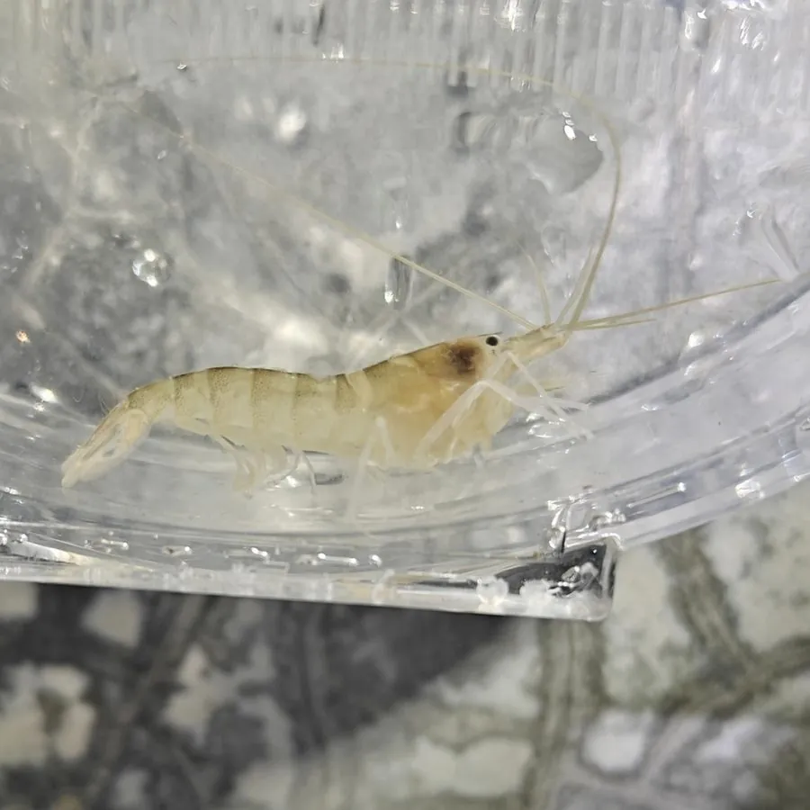

甲壳动物 · 动物界
日本鼓虾 Alpheus japonicus

能合拢大螯发出响亮爆响的常见小型海虾，靠声波和空化气泡震晕猎物，与虾虎鱼等形成共生关系，常见于浅海沙底。
- 分类
- 门节肢动物门纲软甲纲目十足目科鼓虾科属鼓虾属
- 栖息环境
- 浅海沙泥底、海草床和珊瑚礁，挖洞或躲在石缝中
- 地理分布
- 中国、日本和朝鲜半岛沿海
- 保护级别
- 暂无评估
物种志
日本鼓虾体长约 3–6 cm，体色半透明，带褐绿或淡红色斑纹，一只螯特别大，另一只较小；大螯的指节可以快速合拢，产生响亮的爆裂声。
它生活在浅海沙泥底、海草床和珊瑚礁间，喜欢挖洞或躲在石缝中，杂食，取食小型甲壳动物、蠕虫和有机碎屑。鼓虾合拢大螯时喷出的水流会形成空化气泡，气泡破裂产生高温高压和强声波，能把猎物震晕，是动物界最响亮的声音之一。日本鼓虾分布于中国、日本和朝鲜半岛沿海，常与其他鼓虾或虾虎鱼形成共生关系，共享洞穴并互相警戒。水族箱里也能听到它发出的噼啪声。鼓虾的爆响还会干扰声呐和水下通信，是海洋噪声的来源之一。
形态与习性
- 食性取食小型甲壳动物、蠕虫和有机碎屑
- 体长约 3–6 cm
- 武器大螯快速合拢，产生空化气泡和爆响
- 共生常与虾虎鱼共享洞穴、互相警戒
- 分布中国、日本和朝鲜半岛沿海
- 习性穴居，夜间或在洞口附近活动
趣味知识
- 鼓虾合拢大螯时产生的气泡破裂，能发出响亮的爆裂声。
- 它和虾虎鱼会共享一个洞穴，一个负责警戒，一个负责挖洞。
- 水族箱里如果养了鼓虾，夜里能听到噼啪的响声。